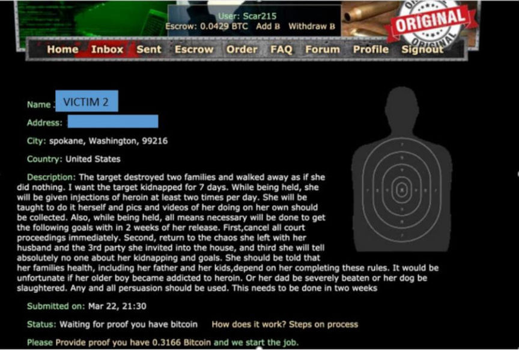
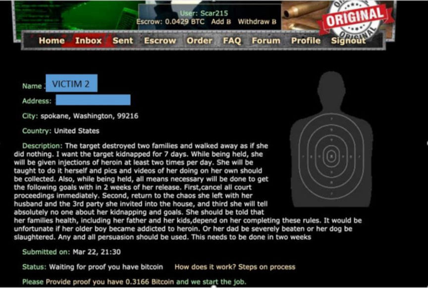

Former Doctor Imprisoned for Attempting to Hire Hitmen
~3 min read | Published on 2023-01-25, tagged Indicted, Murder-for-Hire using 606 words.
A former neonatologist was sentenced to 96 months in federal prison for attempting to hire hitmen on the dark web to harm two victims.
According to the US Attorney's Office for the Eastern District of Washington, 56-year-old Ronald Craig Ilg, of Spokane, Washington, used the username Scar215 on dark web murder-for-hire sites to orchestrate a plot that would see a former colleague injured and his ex-wife kidnapped. Ilg spent more than $60,000 in Bitcoin on the hitmen.
According to the criminal complaint, Scar215 first contacted a dark web murder-for-hire in February 2021. Scar215 told the site's admin that he wanted to hire a hitman to break the hands of one of his former colleagues. He then provided the admin with the victim's name, address, and picture. Ilg sent the admin approximately $2,000 as payment for the assault on the victim.
In late March and early April 2021, Ilg contacted the admins of three dark web murder-for-hire sites and disclosed that he was looking for a hitman to kidnap, drug, and force his estranged wife to drop divorce proceedings that were ongoing at the time and go back to their marriage. Ilg wanted to have the victim kidnapped for seven days and injected with heroin at least twice every day.
Ilg also gave the hitmen a list of goals he wanted the kidnapping to achieve. Each goal would earn the hitmen a bonus if achieved.
Permanently withdraw all court motions and all mediated agreements. Bonus $10K Return to your husband by asking to move back home AND fucking him at least three times within the 2 week time frame. Bonus: $10K Keep her mouth shut and tell no one, ever, about the kidnapping. Bonus $10K Inject her daily with heroin and teach her to do it AND supply pics and videos of her injecting herself. $5K Plant drugs and used needles with her DNA in the needles through her home. Provide some pics of drugs and needles scattered around $5K.[/list] Ilg told the hitmen to use all means necessary to achieve the goals, including threatening to have the victim's father beaten, her pet dog slaughtered and her eldest son made a heroin addict.
In total Ilg spent more than $60,000 on the plot against his ex-wife.
Blockchain analysis revealed that the payments sent to the dark web murder-for-hire sites by Scar215 originated from Coinbase. The FBI acquired information from Coinbase that showed that the funds were sent from an account under Ilg's phone number, email address, and social security number.
The investigators questioned Ilg on April 11, 2021. Ilg admitted that he had attempted to hire hitmen on the dark web but not to harm his ex-wife and a former colleague. He claimed that he wanted to hire a hitman against himself.
The investigators executed a search warrant on Ilg's residence on the same day. The investigators found a locked safe in Ilg's bedroom. Ilg opened the safe and inside the safe, the investigators found a note with the password to Scar215's accounts on the murder-for-hire sites.
On April 13, the investigators accessed accounts associated with Scar215 on three dark web murder-for-hire sites. The investigators then took screenshots of messages exchanged between Scar215 and the admins of the sites.

Ilg pleaded guilty to two counts of transmitting threats in interstate commerce on August 10, 2022.
United States District Judge William Fremming Nielsen
sentenced Ilg to eight years in prison and three years of supervised release on January 24, 2023. Judge Nielsen also ordered him to pay a $100,000 fine and $25,000 in restitution.
Ronald Craig Ilg
According to the US Attorney's Office for the Eastern District of Washington, 56-year-old Ronald Craig Ilg, of Spokane, Washington, used the username Scar215 on dark web murder-for-hire sites to orchestrate a plot that would see a former colleague injured and his ex-wife kidnapped. Ilg spent more than $60,000 in Bitcoin on the hitmen.
According to the criminal complaint, Scar215 first contacted a dark web murder-for-hire in February 2021. Scar215 told the site's admin that he wanted to hire a hitman to break the hands of one of his former colleagues. He then provided the admin with the victim's name, address, and picture. Ilg sent the admin approximately $2,000 as payment for the assault on the victim.
In late March and early April 2021, Ilg contacted the admins of three dark web murder-for-hire sites and disclosed that he was looking for a hitman to kidnap, drug, and force his estranged wife to drop divorce proceedings that were ongoing at the time and go back to their marriage. Ilg wanted to have the victim kidnapped for seven days and injected with heroin at least twice every day.
Ilg also gave the hitmen a list of goals he wanted the kidnapping to achieve. Each goal would earn the hitmen a bonus if achieved.
Quote:Scar215
To earn the additional associated bonus, within 2 weeks of the target being released, she will have completed the specific goal.
[list]
In total Ilg spent more than $60,000 on the plot against his ex-wife.
Blockchain analysis revealed that the payments sent to the dark web murder-for-hire sites by Scar215 originated from Coinbase. The FBI acquired information from Coinbase that showed that the funds were sent from an account under Ilg's phone number, email address, and social security number.
The investigators questioned Ilg on April 11, 2021. Ilg admitted that he had attempted to hire hitmen on the dark web but not to harm his ex-wife and a former colleague. He claimed that he wanted to hire a hitman against himself.
The investigators executed a search warrant on Ilg's residence on the same day. The investigators found a locked safe in Ilg's bedroom. Ilg opened the safe and inside the safe, the investigators found a note with the password to Scar215's accounts on the murder-for-hire sites.
On April 13, the investigators accessed accounts associated with Scar215 on three dark web murder-for-hire sites. The investigators then took screenshots of messages exchanged between Scar215 and the admins of the sites.

A screenshot form the first murder-for-hire site
Ilg pleaded guilty to two counts of transmitting threats in interstate commerce on August 10, 2022.
United States District Judge William Fremming Nielsen
sentenced Ilg to eight years in prison and three years of supervised release on January 24, 2023. Judge Nielsen also ordered him to pay a $100,000 fine and $25,000 in restitution.